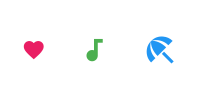
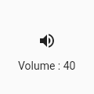
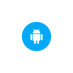

In Flutter Icons class is an identifier for supported material design icons.
Use with the Icon widget to show specific icons.
To use this class, make sure you set uses-material-design: true in your project's pubspec.yaml file in the flutter section. This ensures that the MaterialIcons font is included in your application. This font is used to display the icons. For example:
name: my_awesome_application flutter: uses-material-design: true
Here is an example:
Row(
mainAxisAlignment: MainAxisAlignment.spaceAround,
children: const <Widget>[
Icon(
Icons.favorite,
color: Colors.pink,
size: 24.0,
semanticLabel: 'Text to announce in accessibility modes',
),
Icon(
Icons.audiotrack,
color: Colors.green,
size: 30.0,
),
Icon(
Icons.beach_access,
color: Colors.blue,
size: 36.0,
),
],
)
The above code will produce the following output:
To know what all the icons are available go to Flutter documentation. Below is the link:
https://api.flutter.dev/flutter/material/Icons-class.htmlThe Icon widget displays an icon. Icon widget is not interactive. For an interactive icon, consider material's IconButton
Here are some arguments:
size: The size of the icon in logical pixels. Icons occupy a square with width and height equal to size. It defaults to 24.0.color: Specifies the color of the icon.icon: The name of the icon that will be rendered.Icon( icon : Icons.audiotrack, color: Colors.green, size: 30.0, ) or, Icon( Icons.audiotrack, color: Colors.green, size: 30.0, )
A material design icon button. An icon button is a picture printed on a Material widget that reacts to touches by filling with color (ink). If the onPressed callback is null, then the button will be disabled and will not react to touch.
Requires one of its ancestors to be a Material widget.
Widget build(BuildContext context) {
return Column(
mainAxisSize: MainAxisSize.min,
children: <Widget>[
IconButton(
icon: Icon(Icons.volume_up),
tooltip: 'Increase volume by 10',
onPressed: () {
setState(() {
_volume += 10;
});
},
),
Text('Volume : $_volume')
],
);
}

Icon buttons don't support specifying a background color or other background decoration because typically the icon is just displayed on top of the parent widget's background.
It's easy enough to create an icon button with a filled background using the Ink widget. The Ink widget renders a decoration on the underlying Material along with the splash and highlight InkResponse contributed by descendant widgets.
Widget build(BuildContext context) {
return Material(
color: Colors.white,
child: Center(
child: Ink(
decoration: const ShapeDecoration(
color: Colors.lightBlue,
shape: CircleBorder(),
),
child: IconButton(
icon: Icon(Icons.android),
color: Colors.white,
onPressed: () {},
),
),
),
);
}

Here are some argument you can use:
alignment: Defines how the icon is positioned within the IconButton.color: The color to use for the icon inside the button, if the icon is enabled. Defaults to leaving this up to the icon widget.constraints: Optional size constraints for the button.highlightColor: The secondary color of the button when the button is in the down (pressed) state. The highlight color is represented as a solid color that is overlaid over the button color (if any). If the highlight color has transparency, the button color will show through. The highlight fades in quickly as the button is held down. hoverColor: The color for the button's icon when a pointer is hovering over it.disabledColor: The color to use for the icon inside the button, if the icon is disabled. Defaults to the ThemeData.disabledColor of the current Theme.icon: The icon to display inside the button. This argument takes an Icon widget.iconSize: The size of the icon inside the button.onPressed: The callback that is called when the button is tapped or otherwise activated.padding: The padding around the button's icon. The entire padded icon will react to input gestures.splashColor: The primary color of the button when the button is in the down (pressed) state. The splash is represented as a circular overlay that appears above the highlightColor overlay. The splash overlay has a center point that matches the hit point of the user touch event. The splash overlay will expand to fill the button area if the touch is held for long enough time. If the splash color has transparency then the highlight and button color will show through.padding: The padding around the button's icon. The entire padded icon will react to input gestures.tooltip: Text that describes the action that will occur when the button is pressed.